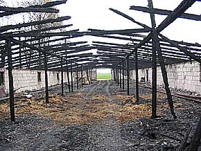

|
Autor: et, Korso, maj 2004
Kolejny po¿ar na fermie drobiu w gminie Radomyœl Wielki. W sobotê 8 maja ¿yciowy dramat sta³ siê udzia³em rodziny prowadz¹cej hodowlê gêsi. W ci¹gu kilku minut doszczêtnie sp³on¹³ ca³y budynek fermy, a w nim 500 gêsich piskl¹t. GMINA RADOMYŒL WIELKI Ferma posz³a z dymem Zosta³y tylko zgliszcza...(fot.et) W lutym do nieszczêœcia dosz³o w pobliskiej Rudzie, gdzie ogieñ strawi³ kurnik wraz z pisklêtami, a straty w³aœciciela Tadeusza Grzanki wynios³y oko³o 25 tysiêcy z³otych. Tym razem straty hodowców s¹ zdecydowanie wiêksze. W³aœcicielka stada dwutygodniowych gêsi które sp³onê³y wraz z budynkiem ocenia straty na ponad 150 tys.z³. Zanim dosz³o do po¿aru, jej syn, z którym prowadzi hodowlê, wyprowadzi³ oko³o 1000 stuk wiêkszych szeœciotygodniowych gêsi na pastwisko – co okaza³o siê byæ prawdziwym szczêœciem w nieszczêœciu. Dramat rozegra³ siê niemal w mgnieniu oka. Ogieñ pojawi³ siê w kurniku przed godzin¹ 11. Prawdopodobn¹ przyczyn¹ jego powstania by³o zwarcie w instalacji elektrycznej. D³ugi ponad 80 –metrowy budynek fermy b³yskawicznie stan¹³ w ogniu. Szybko przyby³e na miejsce tragedii oddzia³y stra¿y po¿arnej nie by³y ju¿ w stanie opanowaæ ognia, na którego szybkoœæ rozprzestrzeniania mia³ te¿ wp³yw doœæ silny wiatr. Niestety nie mog³o byæ mowy o mo¿liwoœci wyprowadzenia gêsi z pal¹cego siê budynku Z charakterystycznym trzaskiem p³on¹³ dach kryty eternitem, konstrukcja dachu i œció³ka wraz z pisklêtami. Ponad 2 godziny stra¿akom zajê³o dogaszanie pogorzeliska. -Nigdy nie widzia³am takiego ognia – opowiada³a nam w³aœcicielka fermy, która ten po¿ar o ma³o nie przep³aci³a kolejnym zawa³em serca. Hodowl¹ drobiu zajmuje siê ju¿ ponad 20 lat i nigdy nie spodziewa³a siê takiego nieszczêœcia. –Mo¿e uda siê odchowaæ te sztuki, które ocala³y i jak dadz¹ jakieœ pieni¹dze z ubezpieczenia budynku, to spróbujemy to odbudowaæ. Mury s¹ zniszczone - trzeba je rozebraæ, tylko fundamenty i posadzka jeszcze siê do czegoœ nadaj¹. Ale co mamy innego zrobiæ? Niestety oba tegoroczne po¿ary kurników w gminie Radomyœl pokazuj¹ tylko ca³¹ skalê problemu. Radomyœl Wielki jest najwiêkszym na Podkarpaciu ,,zag³êbiem drobiarskim”, ale czasy œwietnoœci tej dzia³alnoœci to ju¿ przesz³oœæ. Z powodu k³opotów z op³acalnoœci¹ znaczna czêœæ ferm zakoñczy³a dzia³alnoœæ. Te, które pozosta³y, s¹ w bardzo z³ym stanie i zagro¿enie po¿arowe jest w nich olbrzymie. W³aœcicieli nie staæ na gruntowne remonty przestarza³ych, wybudowanych w latach siedemdziesi¹tych, budynków. Wystarczy iskra np. z uszkodzonej instalacji elektrycznej i ferma p³onie jak pochodnia. Do tego wszystkiego dochodz¹ absurdalne stawki op³at ubezpieczeniowych. Gdyby rolnik chcia³ ubezpieczyæ stado pewnie musia³by dop³acaæ do ca³ego interesu. Takie ryzyko niestety czasami bardzo drogo kosztuje. Burmistrz Radomyœla Józef Rybiñski zapewnia, ¿e poprzez Miejski Oœrodek Pomocy Spo³ecznej pomo¿e rodzinie, która straci³a w ogniu niemal ca³y dorobek ¿ycia. Hodowca z Rudy powoli zapomina o swoim nieszczêœciu sprzed trzech miesiêcy i odbudowuje kurnik, tak¿e dziêki pomocy firmy Melnox, która przekaza³a mu nieodp³atnie p³yty o wartoœci kilku tysiêcy z³otych. Miros³aw Wnuk © 2006-2004 |